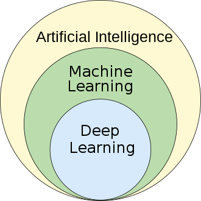

|
From Wikipedia, the free encyclopedia From Kamini Patil
For the journal, see
Machine Learning
(journal).
"Statistical learning" redirects here. For statistical learning in linguistics, see
statistical learning
in language acquisition.
Machine learning (ML) is a field of inquiry devoted to understanding and building
methods that
"learn" that is, methods that leverage data to improve performance on some set of tasks.
It is seen as a part of
artificial intelligence.
Machine learning algorithms build a model
based on sample
data, known as training
data
,
in order to make predictions or decisions without being explicitly programmed to do so.
Machine learning algorithms are used in a wide variety of
applications, such as in medicine, email filtering, speech recognition, agriculture, and computer
vision,
where it is difficult or unfeasible to develop conventional algorithms to perform the needed tasks.
A subset of machine learning is closely related to computational statistics, which focuses on making
predictions
using computers, but not all machine learning is statistical learning. The study of mathematical
optimization
delivers methods, theory and application domains to the field of machine learning. Data mining is a related
field of study, focusing on exploratory data analysis through unsupervised learning.
Some implementations of machine learning use data and neural networks in a way that mimics the
working of
a
biological brain.
In its application across business problems, machine learning is also referred to as predictive
analytics.
|

|
|

History and relationships to other fields
The term machine learning was coined in 1959 by Arthur Samuel, an IBM employee and pioneer in the field of
computer gaming and artificial intelligence. The synonym self-teaching computers was also used in this time
period.
By the early 1960s an experimental "learning machine" with punched tape memory, called CyberTron, had been
developed by Raytheon Company to analyze sonar signals, electrocardiograms, and speech patterns using
rudimentary reinforcement learning. It was repetitively "trained" by a human operator/teacher to recognize
patterns and equipped with a "goof" button to cause it to re-evaluate incorrect decisions. A representative
book on research into machine learning during the 1960s was Nilsson's book on Learning Machines, dealing
mostly
with machine learning for pattern classification. Interest related to pattern recognition continued into the
1970s, as described by Duda and Hart in 1973. In 1981 a report was given on using teaching
strategies so
that a neural network learns to recognize 40 characters (26 letters, 10 digits, and 4 special symbols) from
a
computer terminal.
Modern-day machine learning has two objectives, one is to classify data based on models which have been
developed, the other purpose is to make predictions for future outcomes based on these models. A
hypothetical
algorithm specific to classifying data may use computer vision of moles coupled with supervised learning in
order to train it to classify the cancerous moles. A machine learning algorithm for stock trading may inform
the
trader of future potential predictions.
Ethics
Machine learning poses a host of ethical questions. Systems that are trained on datasets collected with
biases
may exhibit these biases upon use (algorithmic bias), thus digitizing cultural prejudices. For example, in
1988, the UK's Commission for Racial Equality found that St. George's Medical School had been using a
computer
program trained from data of previous admissions staff and this program had denied nearly 60 candidates who
were
found to be either women or had non-European sounding names. Using job hiring data from a firm with racist
hiring policies may lead to a machine learning system duplicating the bias by scoring job applicants by
similarity to previous successful applicants. Responsible collection of data and documentation of
algorithmic rules used by a system thus is a critical part of machine learning.
AI can be well-equipped to make decisions in technical fields, which rely heavily on data and historical
information. These decisions rely on the objectivity and logical reasoning. Because human languages contain
biases, machines trained on language corpora will necessarily also learn these biases.
Other forms of ethical challenges, not related to personal biases, are seen in health care. There are
concerns
among health care professionals that these systems might not be designed in the public's interest but as
income-generating machines. This is especially true in the United States where there is a long-standing
ethical dilemma of improving health care, but also increase profits. For example, the algorithms could be
designed to provide patients with unnecessary tests or medication in which the algorithm's proprietary
owners
hold stakes. There is potential for machine learning in health care to provide professionals an additional
tool
to diagnose, medicate, and plan recovery paths for patients, but this requires these biases to be mitigated.
Limitations
Although machine learning has been transformative in some fields, machine-learning programs often fail to
deliver
expected results. Reasons for this are numerous: lack of (suitable) data, lack of access to the
data, data bias, privacy problems, badly chosen tasks and algorithms, wrong tools and people, lack of
resources,
and evaluation problems.
In 2018, a self-driving car from Uber failed to detect a pedestrian, who was killed after a collision.
Attempts to use machine learning in healthcare with the IBM Watson system failed to deliver even after years
of
time and billions of dollars invested.
Machine learning has been used as a strategy to update the evidence related to a systematic review and
increased
reviewer burden related to the growth of biomedical literature. While it has improved with training sets, it
has
not yet developed sufficiently to reduce the workload burden without limiting the necessary sensitivity for
the
findings research themselves.
- Bais
Machine learning approaches in particular can suffer from different data biases. A machine learning
system trained specifically on current customers may not be able to predict the needs of new
customer
groups that are not represented in the training data. When trained on human-made data, machine
learning
is likely to pick up the constitutional and unconscious biases already present in society. Language
models learned from data have been shown to contain human-like biases. Machine learning
systems used for criminal risk assessment have been found to be biased against black people.
In 2015, Google photos would often tag black people as gorillas, and in 2018 this still was not
well resolved, but Google reportedly was still using the workaround to remove all gorillas from the
training data, and thus was not able to recognize real gorillas at all. Similar issues with
recognizing non-white people have been found in many other systems. In 2016, Microsoft tested a
chatbot that learned from Twitter, and it quickly picked up racist and sexist language. Because of
such challenges, the effective use of machine learning may take longer to be adopted in other
domains. Concern for fairness in machine learning, that is, reducing bias in machine learning and
propelling its use for human good is increasingly expressed by artificial intelligence scientists,
including Fei-Fei Li, who reminds engineers that "There's nothing artificial about AI...It's
inspired by
people, it's created by people, and—most importantly—it impacts people. It is a powerful tool we are
only just beginning to understand, and that is a profound responsibility."
- Explainability
Explainable AI (XAI), or Interpretable AI, or Explainable Machine Learning (XML), is artificial
intelligence (AI) in which humans can understand the decisions or predictions made by the AI. It
contrasts with the "black box" concept in machine learning where even its designers cannot explain
why
an AI arrived at a specific decision. By refining the mental models of users of AI-powered systems
and
dismantling their misconceptions, XAI promises to help users perform more effectively. XAI may be an
implementation of the social right to explanation.
- Overfitting
Settling on a bad, overly complex theory gerrymandered to fit all the past training data is known as
overfitting. Many systems attempt to reduce overfitting by rewarding a theory in accordance with how
well it fits the data but penalizing the theory
- Other limitations and vulnerabilities
Learners can also disappoint by "learning the wrong lesson". A toy example is that an image
classifier
trained only on pictures of brown horses and black cats might conclude that all brown patches are
likely
to be horses. A real-world example is that, unlike humans, current image classifiers often do not
primarily make judgments from the spatial relationship between components of the picture, and they
learn
relationships between pixels that humans are oblivious to, but that still correlate with images of
certain types of real objects. Modifying these patterns on a legitimate image can result in
"adversarial" images that the system misclassifies.
Adversarial vulnerabilities can also result in nonlinear systems, or from non-pattern perturbations.
Some systems are so brittle that changing a single adversarial pixel predictably induces
misclassification.[citation needed] Machine learning models are often vulnerable to manipulation
and/or
evasion via adversarial machine learning.
Researchers have demonstrated how backdoors can be placed undetectably into classifying (e.g., for
categories "spam" and well-visible "not spam" of posts) machine learning models which are often
developed and/or trained by third parties. Parties can change the classification of any input,
including
in cases for which a type of data/software transparency is provided, possibly including white-box
access.